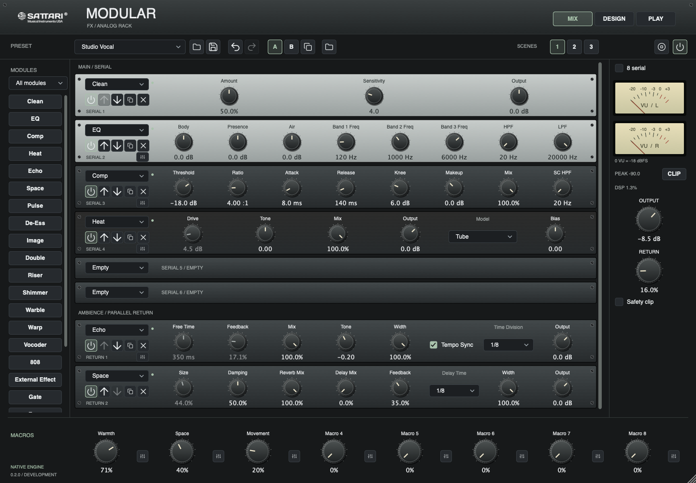

Go deeper into the sound.
Vocal, Create and instrument collections come together in Modular. Start with a familiar chain, then take it somewhere else.
Build a world inside your rack.
Find the voice in your mix.
Keep the instinct that makes it yours.

01 / THE LINEUP
Four focused flagships, supported by Tools and Compass. Different ways into the same goal: a sound that feels like you.
Development previews. Public downloads are not yet open.
THE CREATIVE CENTER
Modular brings your effects, instruments and experiments into the same workspace.
Inside Modular ↗Clarity, character and space. Build the chain around the performance.
From a little tape movement to echoes, shimmer and unfamiliar textures.
Layer Chop, Granulator and Rhythm Genie. Give each source its own place.
Bring trusted, installed VST3 effects and instruments into the rack.
02 / OUR APPROACH
More possibility in one creative platform. Purpose-built workflows when a musical job deserves its own space.
Vocal, Create and instrument collections come together in Modular. Start with a familiar chain, then take it somewhere else.
Royal Chain and Mix bring comparison into the workflow. Audition the change, judge the difference and keep the final say.
Compass and Key provide shared musical context. Focused tools still work independently when you want to set the direction yourself.
03 / FROM THE STUDIO
New workflows in active development.
October 2026 studio notes.
22 effects, four source layers, Vocal and Create preset import, and trusted VST3 hosting.
Nine stage bypasses, Original audition, level matching and 18 factory programs.
Studio and Extreme Live workflows, captured-note editing and four harmony voices.
Linked-track analysis, editable gain, EQ and dynamics proposals, compare and undo.
THE COMPLETE LINEUP
WHERE WE ARE TODAY
The next chapter is in development. Real-material listening, named DAW sessions, platform qualification and installation checks come before public availability.
Four flagships, Tools and Compass. Modular FX and Instrument share the creative platform.
macOS AU, VST3 and standalone. Windows VST3 and standalone. Arp is plugin-only; supported hosts will be confirmed at release.
Keep legacy plugins installed for older projects. Modular preset import does not replace DAW automation or convert every legacy workflow.
GOOD TO KNOW
Public downloads are not yet open. These pages show development builds, with features and platform support still undergoing release qualification.
Vocal and Create are now native Modular collections. Modular Instrument provides four source layers. Legacy wrappers remain for existing sessions, and deeper Stack migration is still in progress.
No. Compatible products can follow shared musical context from Compass or Key, but retain their manual controls and independent workflows.
The development build hosts trusted mono/stereo VST3 effects and instruments in-process. It does not provide AU hosting, crash isolation or multi-output routing.
THIS IS JUST THE START
Explore what’s coming.
Public downloads are not yet open.
BEYOND THE PLUGIN SUITE
StemDeck Performance & remix ↗Bounce Browser listening ↗